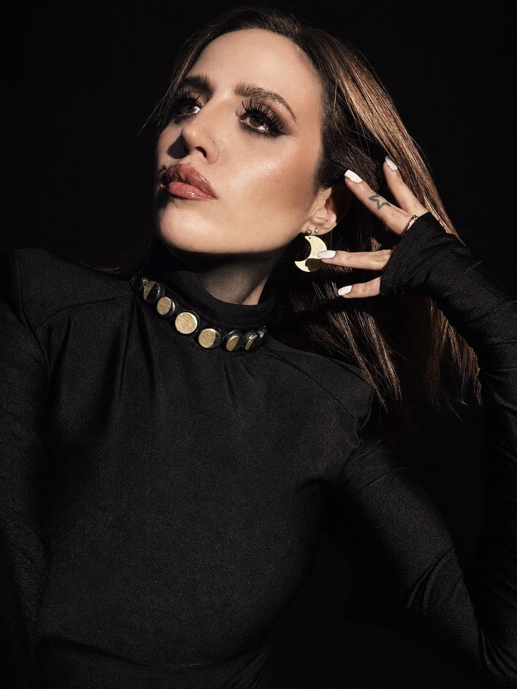

ANNA FIORI:
EL RITUAL DE METZTLI

Anna Fiori ha regresado para destruir cualquier zona de confort en el metal nacional. Su tercer álbum de estudio, Metztli, no es un disco complaciente. Estamos ante una obra conceptual aplastante que utiliza la crudeza del metal cinemático y la mística azteca como un mazo para golpear las fibras más sensibles del duelo.
La producción, a cargo de Vikram Shankar (Within Temptation), dota al disco de una mezcla sonora brutalmente masiva. Logra amalgamar la grandilocuencia de una orquesta sinfónica europea con la hostilidad rítmica de la instrumentación prehispánica. Los coros en náhuatl no son un adorno; se sienten místicos, agresivos y necesarios.
EL LUTO BAJO LA LUZ DE LA LUNA
Conceptualmente, el álbum es un mapa psicológico de las fases del duelo y la ansiedad. Canciones como "En El Vacío" o "Entre Mil Voces" capturan la desesperación del aislamiento. No hay finales felices aquí; es música hecha desde la herida abierta, dotada de una honestidad brutal.
ANÁLISIS DE SENCILLOS
- EN EL VACÍO: Atmósfera intensa que representa la ansiedad, combinando tambores prehispánicos y cuerdas en un efecto de persecución.
- ENTRE MIL VOCES: La pieza más cinematográfica, con coros pesados y transiciones de piano que reflejan el ruido mental de la pérdida.

TRACKLIST: METZTLI
- 01. Regreso a la Tierra / 02. En el Vacío / 03. Entre Mil Voces
- 04. Metztli / 05. Cenizas del Pasado / 06. El Despertar de la Luna
- 07. Eco en la Oscuridad / 08. Raíces de Sangre
Metztli es un triunfo absoluto. Denso, oscuro y técnicamente impecable, posiciona a Anna Fiori con la vara ridículamente alta para el metal sinfónico en Latinoamérica. Una obra destructiva y hermosa.